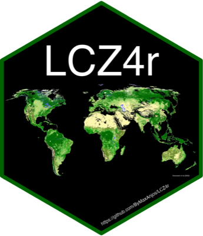

LCZ4r: Tools for Local Climate Zones and Urban Heat Island Analysis
Source:R/LCZ4r-package.R
LCZ4r-package.RdLCZ4r provides a complete workflow for Local Climate Zone (LCZ) and Urban Heat Island (UHI) analysis: downloading and clipping LCZ maps, deriving the physical parameters of each class, assigning LCZ classes to weather stations, building time series, computing UHI intensity and anomalies, and producing publication-ready maps and figures.
General functions
lcz_get_map(),lcz_get_map_euro(),lcz_get_map_usa(),lcz_get_map_generator(): download or clip LCZ maps.lcz_get_map2(): clip a local LCZ raster to a city or polygon.lcz_get_parameters(): physical parameters of the 17 LCZ classes.lcz_cal_area(): area and share of each LCZ class.lcz_plot_map(),lcz_plot_parameters(): maps.
Local functions
lcz_ts(): LCZ time series.lcz_uhi_intensity(): urban heat island intensity.lcz_anomaly(): temperature anomalies by LCZ.lcz_anomaly_map(),lcz_interp_map(),lcz_interp_eval(): spatial interpolation and evaluation.lcz_plot_interp(): interpolated maps.
Languages
Every exported function accepts lang. See lcz_langs() for the 11
available codes, lcz_set_lang() to change the session default and
lcz_tr() to translate a key directly.
Figures
lcz_theme_journal() and lcz_save_figure() implement the editorial system:
120/190 mm widths, 11 pt type, colour-blind-safe palettes, vector or 600 dpi
output. The full specification is in dev/design-system.md.
References
Stewart, I. D., and Oke, T. R. (2012). Local Climate Zones for urban temperature studies. Bulletin of the American Meteorological Society, 93(12), 1879-1900. doi:10.1175/BAMS-D-11-00019.1
Demuzere, M., Kittner, J., Martilli, A., Mills, G., Moede, C., Stewart, I. D., van Vliet, J., and Bechtel, B. (2022). A global map of Local Climate Zones to support earth system modelling and urban-scale environmental science. Earth System Science Data, 14(8), 3835-3873. doi:10.5194/essd-14-3835-2022